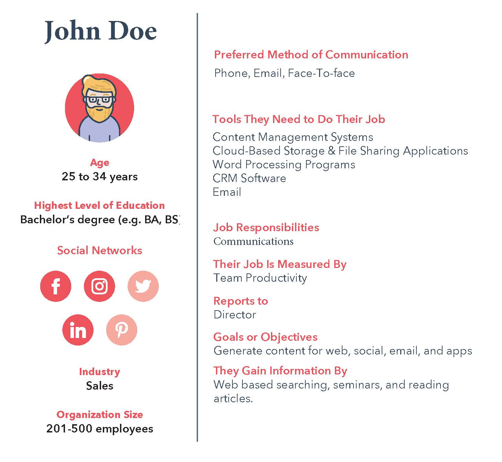
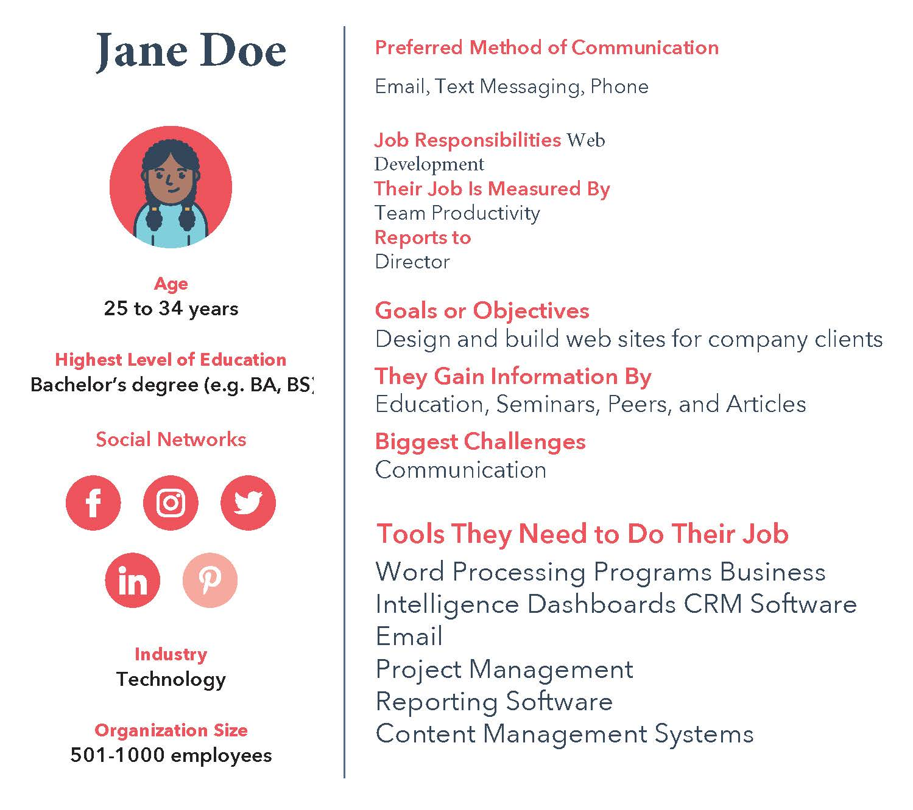

Target Audience
This site is designed to attract professionals looking to use widgets and APIs to connect to their website or use in communications. There is potential to attract a wider audience as the site progresses and gains traction in the industry as a leading resource for all things weather.
Personas
 Senarios
John is a professional looking for new content to create personalization for communications that he is building for an upcoming event. He wants to be able to provide local weather data and potential what to prepare for while attending the three-day convention.
Jane has been asked to add in a widget into a customer’s beach front hotel web site that will display current local weather and provide an opportunity for potential customers to prepare for their vacation on the beach. She has also been asked to search for companies that provide these assets for free or a nominal cost and provide that to the client.
Mr. Doe is searching for weather data and possibly a widget that he can add to his blog that he writes for the local municipality. He has little to no budget for a widget and would like to find one that is simple to use.
Sally is a part of a school project with three other students. They are researching weather patterns for the past ten years and is looking for information on weather patterns in the United States and Europe. Her and the team are going to compare the differences in weather for both areas to determine the impact of cow flatulent emissions.
Bill, a shut in, has been going to therapy for the past seven years and has worked on being able to go on a vacation. It is his first one and with the help of his therapist he has determined that he would like to go somewhere mild and not well traveled. He is looking for more of an adventure that is outdoors that doesn’t have a large visitor population but has some. He wants to search weather conditions and potential vacation spots.